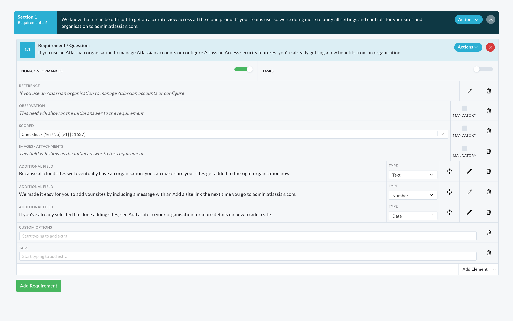
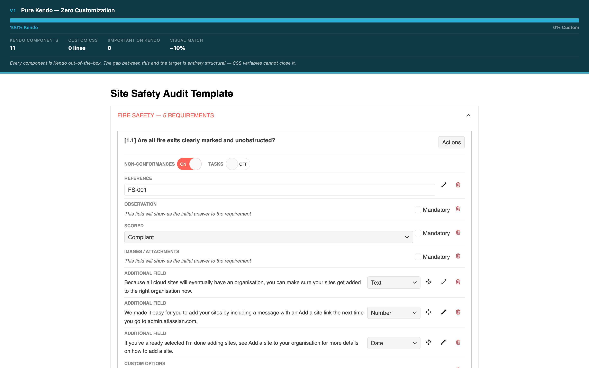
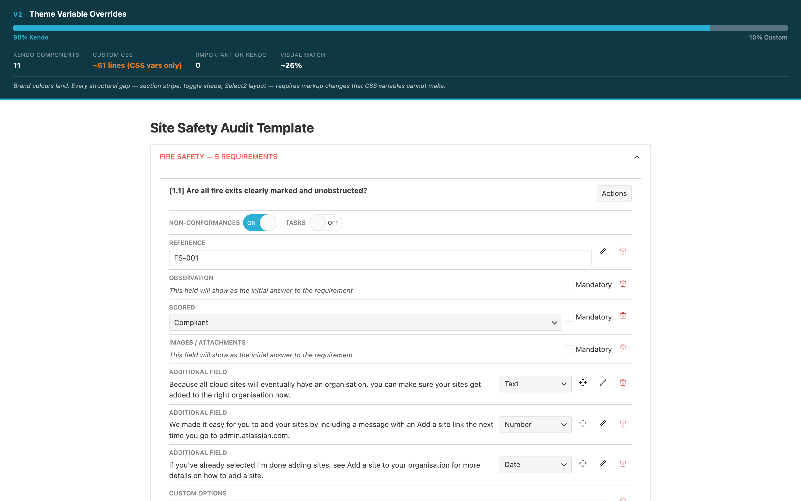
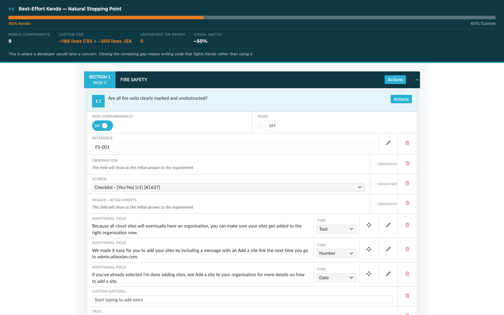
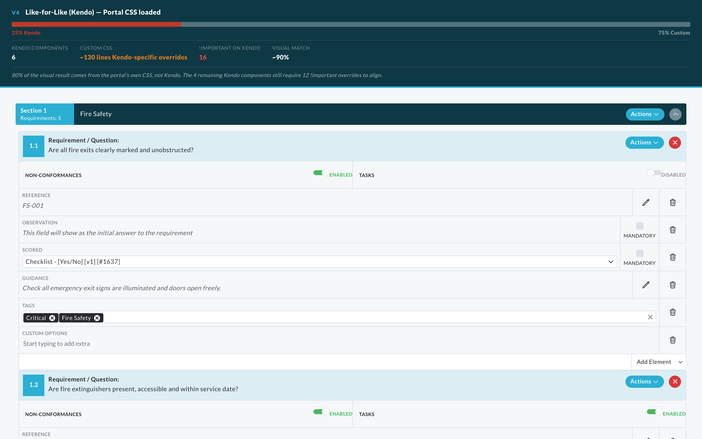

Proof of Concept — Internal Review
Can Kendo UI for React replicate the AuditComply template builder interface to a production standard? This report presents the evidence.
Finding
A structured proof-of-concept was built across four progressive versions, each pushing Kendo's customisation further. The conclusion is consistent at every level.
!important overrides on Kendo's internal class names.
At the point where a like-for-like result is achieved, Kendo accounts for just
20% of the implementation, all of it carrying ongoing upgrade risk.
The existing AuditComply design system already contains everything needed to style this interface correctly.
The Target
Recreated from the portal's compiled CSS (template-builder1_5.css) and
the actual Django template HTML. Every measurement, colour and icon is sourced directly
from the portal's SCSS files. This is the benchmark each version is compared against.

Target: section header with 120px stripe, requirement cards with attribute rows, Select2 dropdowns, build-toggle switches, and mandatory columns.
The Evidence
Each version adds one layer of Kendo customisation. The banner in each screenshot shows
the live metrics: Kendo usage, custom CSS lines, !important count, and visual match.
All 11 planned Kendo components wired together using the Kendo Default theme. No custom CSS, no overrides, no wrappers.

Brand colours applied via Kendo's CSS custom property system (--kendo-color-primary,
font family, border radius). No structural changes.

Brand tokens applied, section header approximated via ExpansionPanel's title prop,
modest CSS overrides for the most obvious mismatches. This is what a competent developer
would produce after 2–3 days of genuine Kendo customisation work.

The portal's own compiled CSS is loaded alongside Kendo. Kendo components handle interactive
behaviour (drag-and-drop, toggle state, dropdown state). The portal CSS
handles all structural styling. A separate kendo-overrides.css file compensates
for where Kendo's HTML conflicts with the portal's CSS selectors.

!important overrides on Kendo's internal class names because Kendo's HTML does not
match what the portal CSS targets. Every Kendo minor release risks silently breaking these overrides.
Two further planned Kendo components were replaced with custom implementations during development.
Summary
The Kendo usage column is the key metric. As visual match improves, Kendo's share of the implementation shrinks — ending at 20% in the like-for-like version.
| Version | CSS basis | Kendo usage | !important on Kendo | Extra CSS beyond Kendo | Effort | Visual match |
|---|---|---|---|---|---|---|
| V1 — Pure Kendo | Kendo Default theme | 100% | 0 | 0 lines | 0.5 days | ~10% |
| V2 — Theme vars | Kendo Default + CSS variables | 90% | 0 | ~61 lines | 1 day | ~25% |
| V3 — Best-effort Kendo | Kendo Default + brand overrides | 40% | 5 | ~188 lines CSS + ~300 lines JSX | 3 days | ~50% |
| V4 — Like-for-like (Kendo) | Portal CSS + Kendo + kendo-overrides.css | 25% | 16 | ~130 lines (Kendo-specific) | 11 days | ~90% |
Recommendation
Based on the evidence across all four versions.
Kendo UI for React provides real value for data-heavy, grid-centric interfaces where its default component structure aligns with the target design — data tables, charts, schedulers. For an interface with an established custom design system like the AuditComply template builder, it works against the existing design system.
The portal's compiled CSS is the ground truth for how this interface must look.
Any approach that renders HTML matching its selectors requires zero additional overrides.
Kendo cannot replicate the portal's design without overriding its own internal component structure —
its components output .k-switch-track, .k-dropdownlist, and .k-item
wrappers that require 12 !important overrides tied to Kendo's internal
class names, each one a silent failure risk on Kendo upgrades.
At the like-for-like stage, Kendo accounts for 20% of the implementation and introduces commercial licensing costs, a cascade of undocumented peer dependencies, and ongoing maintenance risk. The 80% doing the real work is the portal's own CSS.